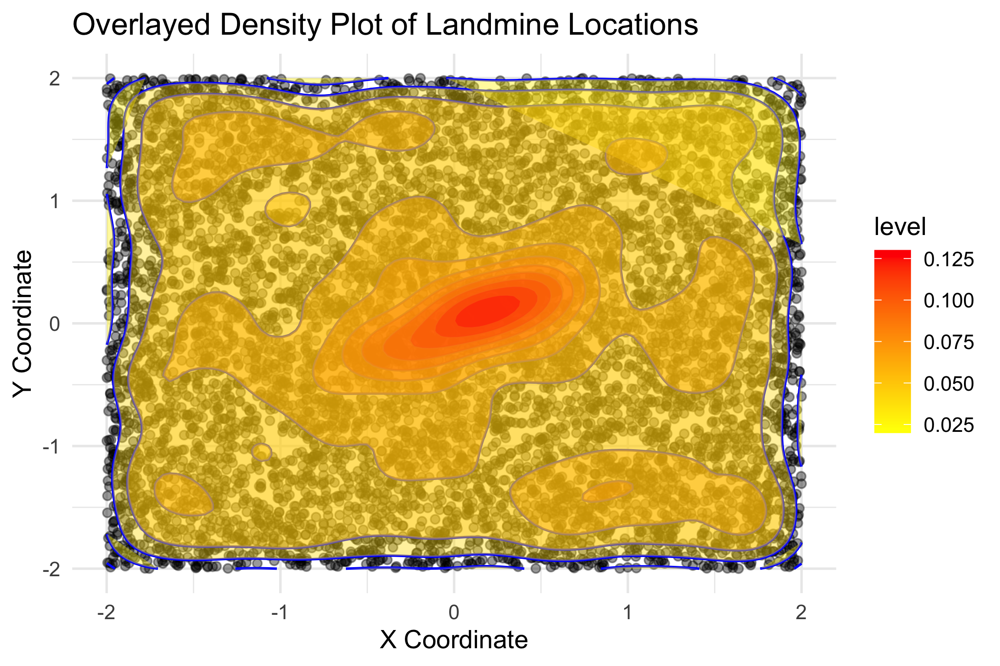
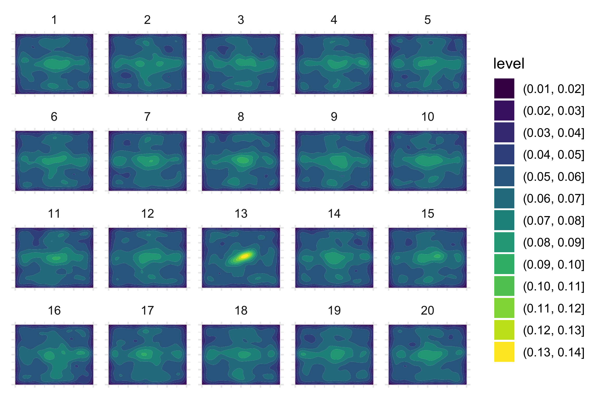
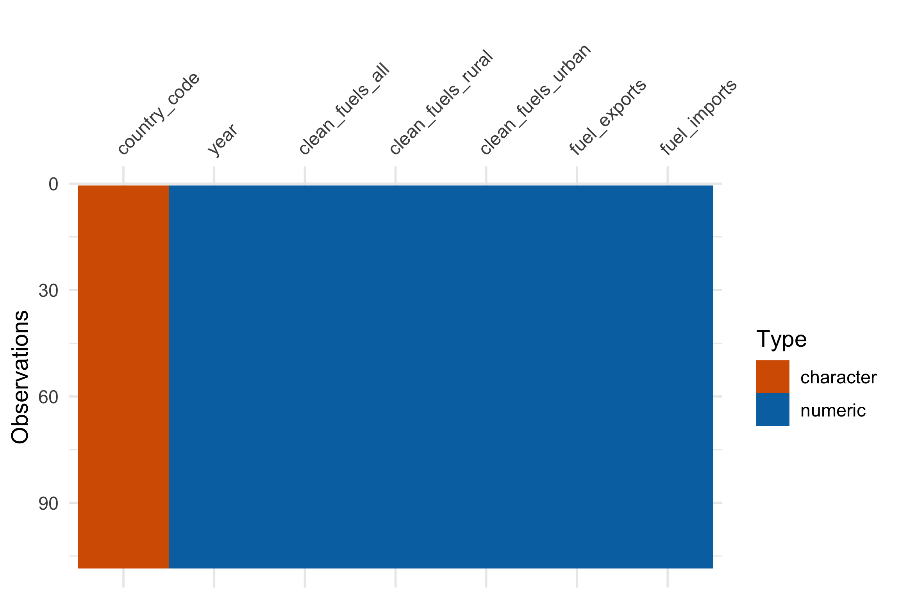
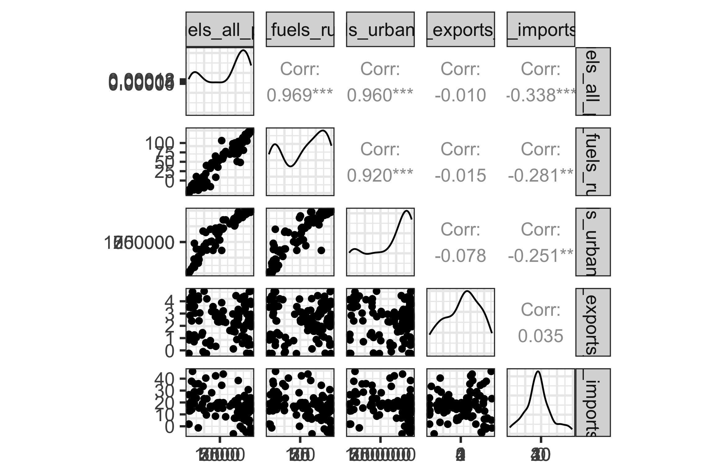
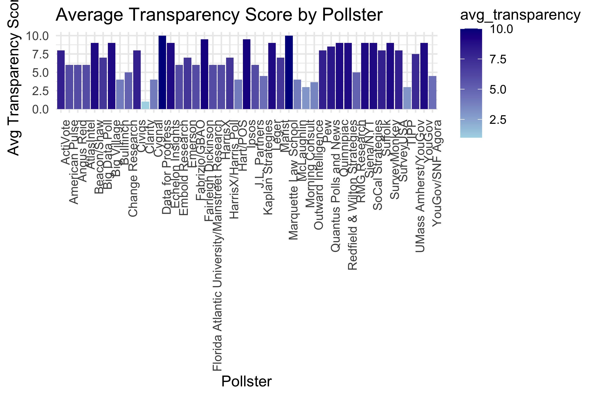

Code
landmine <- read_csv("data/landmine3.csv")doubledecker(xtabs(n ~ Dept + Gender + Admit, data = ucba), gp = gpar(fill = c(“grey90”, “orangered”)))
\(H_0\) : There is no association between Department, Gender and Admits. That is, the distribution of admits are not influenced by either department or gender.”
ggplot(landmine, aes(x, y)) + geom_point(alpha=0.6)
\(H_0\) : There is no spatial association between the x and y coordinates of the landmines. The distribution of landmines across the field is random, with no significant clustering or pattern in their spatial arrangement.
landmine <- read_csv("data/landmine3.csv")# 1. Scatter Plot
ggplot(landmine, aes(x = x, y = y)) +
geom_point(alpha=0.3) +
labs(title = "Scatter Plot of Coordinates") 
# 2. Heatmap
ggplot(landmine, aes(x = x, y = y)) +
stat_bin2d(bins = 30) +
scale_fill_viridis_c() +
labs(title = "Heatmap of Landmine Density") +
theme_minimal()
# 3. Contour Plot
ggplot(landmine, aes(x = x, y = y)) +
geom_density_2d() +
labs(title = "Contour Plot of Landmine Density") +
theme_minimal()
# 4. Overlayed Density Plot
ggplot(landmine, aes(x, y)) +
geom_point(alpha = 0.4) +
geom_density2d(color = "blue") +
stat_density2d(aes(fill = ..level..), geom = "polygon", alpha = 0.4) +
scale_fill_gradient(low = "yellow", high = "red") +
theme_minimal() +
labs(title = "Overlayed Density Plot of Landmine Locations",
x = "X Coordinate",
y = "Y Coordinate") +
theme_minimal()
# 5. Hexbin Plot
ggplot(landmine, aes(x = x, y = y)) +
stat_bin_hex(bins = 30) +
scale_fill_viridis() +
labs(title = "Hexbin Plot of Landmine Density") +
theme_minimal()
# 6. KDE Plot
ggplot(landmine, aes(x, y)) +
geom_density_2d_filled() +
labs(title = "KDE of Landmine Locations") +
theme_minimal()
Yes, we can observe potential locations of landmines from the plots generated above.
Lets consider the overlayed density plot: In the plot, the red area represents the region with the highest density of points, indicating that the landmines are likely concentrated in that area.
Observations:
set.seed(20190709)
ggplot(lineup(null_permute('y'), landmine),
aes(x=x, y=y)) +
geom_density_2d_filled() +
theme_minimal() +
facet_wrap(~ .sample) +
theme(axis.text=element_blank(),
axis.title=element_blank())
# decrypt("o0vr 8ZGZ D3 k5fDGD53 YM")Computing the p-value
As true data position is indeed plot 13
We suppose that each person has the same ability to identify the data plot. If we let X be the number of people who correctly identified the data plot in the lineup, then X ~ B(8,p). The visual inference p-value is calculated from testing the hypothesis \(h_0\): p = 0.05 vs \(H_1\): p != 0.05 , and so P(X = 8) is an extremely small value. The visual inference p-value is extremely small so there is strong evidence to reject the null hypothesis. Hence, it strongly suggests that the data plot is distinguishable from the random plots, meaning it likely contains meaningful features that set it apart from the null distribution and is not just a random occurrence.
nullabor::pvisual(8, 8, 20) x simulated binom
[1,] 8 0 3.9e-11The p-value is \(3.9e^{-11}\).
fuel_data <- read_csv("data/wdi_valid.csv")options(scipen = 999)
fuel <- fuel_data |>
filter(year == "2022")Checking the Composition of Data types
vis_dat(fuel)
Plotting the histograms of each variable to assess the distribution.
g1 <- ggplot(fuel, aes(x = clean_fuels_all)) +
geom_histogram(binwidth = 5, color = "white")
g2 <- ggplot(fuel, aes(x = clean_fuels_rural)) +
geom_histogram(binwidth = 5, color = "white")
g3 <- ggplot(fuel, aes(x = clean_fuels_urban)) +
geom_histogram(binwidth = 5, color = "white")
g4 <- ggplot(fuel, aes(x = fuel_exports)) +
geom_histogram(binwidth = 5, color = "white")
g5 <- ggplot(fuel, aes(x = fuel_imports)) +
geom_histogram(binwidth = 5, color = "white")
g1 + g2 + g3 + g4 + g5 + plot_layout(ncol = 3)
From the above plot, we can observe that:
Creating Boxplots to confirm outliers
df_long <- fuel |>
pivot_longer(
cols = -c(country_code, year),
names_to = "fuel_type",
values_to = "percentage"
)ggplot(df_long, aes(x = percentage)) +
geom_boxplot() +
facet_wrap(~ fuel_type) +
labs(title = "Boxplot of fuel variables",
x = "Percentage",
y = "Count") +
theme_minimal()
fuel |> select(-country_code, -year) |>
GGally::ggpairs()
Data Plot before transformation
fuel |> select(-country_code, -year) |>
GGally::ggpairs()
Applying the transformations
transformed <- fuel |>
mutate(clean_fuels_all_power_2 = (clean_fuels_all)^2,
clean_fuels_rural_nt = clean_fuels_rural,
clean_fuels_urban_power_3 = (clean_fuels_urban)^3,
fuel_exports_log = log1p(fuel_exports),
fuel_imports_nt = fuel_imports)
transformed |> select(-country_code, -year, -clean_fuels_all, -clean_fuels_rural, -clean_fuels_urban, -fuel_exports, -fuel_imports) |>
GGally::ggpairs()
Post transformation we can observe in clean_fuels_all and clean_fuels_urban, the skewness is less visible as compared to before. While the transformation has reduced skewness, the plots are not symmetric and nonlinear.
The log transformation on fuel_exports has worked really well. The transformation has significantly reduced the skewness and the plot is now roughly symmetric.
In the scatter plots, the transformations have increased variance in few such as clean_fuels_all vs fuel_imports.
Heteroskedasticity in most scatter plots has slightly reduced and we can observe a reduction in skewness as well. That is, in the plots without transformations, few plots have significant concentration of data points in one side of the plot, post transformation this has reduced.
The transformation has helped in increasing linearity and reducing curvature as observed in plots related to clean_fuels_all vs clean_fuels_rural. The same can be observed in few other plots as well.
Negative relationship between fuel exports and imports: As countries export more fuel, their need to import fuel typically decreases, leading to a negative relationship between these two variables.
Urban areas having better access to clean fuels than rural areas: Due to better infrastructure and access to resources, urban areas generally are expected to have significantly higher access to clean fuels compared to rural areas.
Countries with higher economic development are likely to have greater access to clean fuels: Countries with stronger economies and more resources are expected to show better access to clean fuels, as they can invest in cleaner energy infrastructure and technology.
Simultaneous increases in both fuel exports and imports: In some cases, countries like Brazil and Jamaica have similar levels of of both fuel exports and fuel imports. This is unexpected, as one would assume that increased exports would reduce the need for imports, but it may point to the import and export of different types of fuel.
Similar levels of clean fuel access in both urban and rural areas: In many countries like Algeria and Belarus the access to clean fuels in rural and urban are at par. Moreover, there are instances where rural areas show slightly higher access to clean fuels than urban areas like in Jamaica, which is unexpected since urban regions generally have better infrastructure.
Minimal progress in clean fuel access in some countries: Despite global initiatives, some countries like Benin and Ethiopia still show very low access to clean fuels, especially in rural areas. This disparity is surprising, given the overall progress worldwide.
winner <- read_csv("data/polls_Sep1_2024.csv")Checking the categories in population
unique(winner$population)[1] "lv" "rv" "a" How the results differ
Likely Voters: Polls of likely voters are considered the most dependable when predicting election outcomes because they specifically focus on individuals who are highly expected to vote. By narrowing the survey sample to people most likely to show up on Election Day, these polls reduce the uncertainty found in broader population categories, such as registered voters or all adults. As a result, the data from likely voter polls closely aligns with actual voting behavior, making them more accurate in estimating the final results. Additionally, because these voters are more politically engaged, their preferences often reflect more informed and committed choices, further increasing the reliability of the polling outcome.
Registered Voters: Polls of registered voters tend to be less accurate in predicting election results because they include people who are eligible to vote but might not turn out on Election Day. This group consists of individuals with varying levels of political involvement, from those highly motivated to vote to those who are less inclined to do so. As a result, these polls offer a broader view of public opinion but often misjudge actual voter turnout. Since registered voter polls capture opinions from people who may not be fully committed to voting, the results can change as the election draws nearer. This makes these polls less reliable when compared to likely voter polls, as the surveyed preferences may not convert into actual votes. While they provide a broader perspective, the chances of their results differing from the final outcome are higher.
Adults: Polls of all adults provide a broader perspective on public opinion, capturing the views of both voters and non-voters. However, this makes them less accurate for predicting election outcomes, as many respondents may not actually vote. These polls can reflect general societal attitudes or preferences, but they may overrepresent groups that are less likely to participate, such as younger adults or those less politically engaged. As a result, while they offer valuable insights into the overall mood of the public, they are not a reliable measure of how the electorate will behave on Election Day, making them less useful for predicting actual results compared to polls focused on likely or registered voters.
Examining the average results for Trump and Harris by each Pollster
# Average results for Harris and Trump by pollster
pollster_bias <- winner |>
group_by(pollster) |>
summarise(Harris = mean(Harris, na.rm = TRUE),
Trump = mean(Trump, na.rm = TRUE)) |>
pivot_longer(cols = c(Harris, Trump), names_to = "Candidate", values_to = "Average_Result")
ggplot(pollster_bias, aes(x = pollster, y = Average_Result, fill = Candidate)) +
geom_bar(stat = "identity", position = position_dodge(width = 0.8)) +
labs(title = "Average Results for Harris and Trump by Pollster",
x = "Pollster", y = "Average Result (%)") +
theme_minimal() +
theme(axis.text.x = element_text(angle = 90, hjust = 1, vjust = 0.5, size = 10)) +
scale_fill_manual(values = c("blue", "red")) +
theme(legend.position = "right") 
From the bar plot, it seems that most pollsters report relatively balanced results for Harris and Trump. However, there are a few observations:
Examining the transparency score for each Pollster
#Average transparency score for each pollster
pollster_transparency <- winner |>
group_by(pollster) |>
summarise(avg_transparency = mean(transparency_score, na.rm = TRUE))
ggplot(pollster_transparency, aes(x = pollster, y = avg_transparency, fill = avg_transparency)) +
geom_bar(stat = "identity") +
labs(title = "Average Transparency Score by Pollster",
x = "Pollster",
y = "Avg Transparency Score") +
scale_fill_gradient(low = "lightblue", high = "darkblue") +
theme_minimal() +
theme(axis.text.x = element_text(angle = 90, hjust = 1)) 
From the Transparency Plot, we can make the following observations:
Pollsters with high transparency score: Pollsters like Marist, Kaplan Strategies, Ipsos, and Emerson, with average transparency scores above 8, tend to be more open about their methodologies and data collection practices. This openness suggests that their results are more reliable and balanced. Typically, pollsters with higher transparency scores are less prone to significant bias, as transparency often aligns with greater credibility in polling.
Pollsters with low transparency score: Pollsters like Big Village, Civics, Clarity, and Change Research, with transparency scores around 4 or lower, often demonstrate less openness regarding their polling methodologies, which can raise concerns about potential bias. Low transparency typically makes it harder to assess the reliability of their results, increasing the likelihood of bias due to the lack of visibility into their methods and data sources.
Pollsters with mid level transparency score: Pollsters with transparency scores between 5 and 7, show some openness about their methodologies. This partial transparency can raise questions about their credibility and potential biases, highlighting the need for greater clarity to build trust in their results.
Based on the average result by pollster and transparency scores we can make the following observations:
Change Research, Bullfinch, and Fabrizio/GBAO all display low transparency scores and noticeable bias—Change Research toward Harris, and both Bullfinch and Fabrizio/GBAO toward Trump. This combination of low transparency and bias strongly suggests that their polling results may not be fully impartial or reliable.
Outward Intelligence shows moderate transparency, but given their bias toward Harris, their results should still be scrutinized. While their transparency is not as low as Change Research or Bullfinch, the bias is still noticeable.
Similar observations can be made for other pollsters showing difference in average result for Trump and Harris.
Hence, Pollsters with low transparency and visible bias in their results are more likely to be influenced by unreliable methods. Change Research, Bullfinch, and Fabrizio/GBAO fit this pattern, suggesting a closer examination in their polling outcomes. Higher transparency generally correlates with more reliable results, so focusing on pollsters with high transparency scores might provide more balanced and credible insights.
I used ChatGPT to discover new alternative plots like Kernel Density Estimation Plot and Overlayed Density Plot and understand more about these plots. I also used it to understand functions like “doubledecker” and “xtabs”.
I was able to get information on websites where I could read about the population categories in US election data. Further, I used it to understand what demographics made up these categories.
I also used it to understand the power of ladder transformations. Lastly, it helped me in formatting ggplot labels in the right way for the graphs made to check pollster bias.